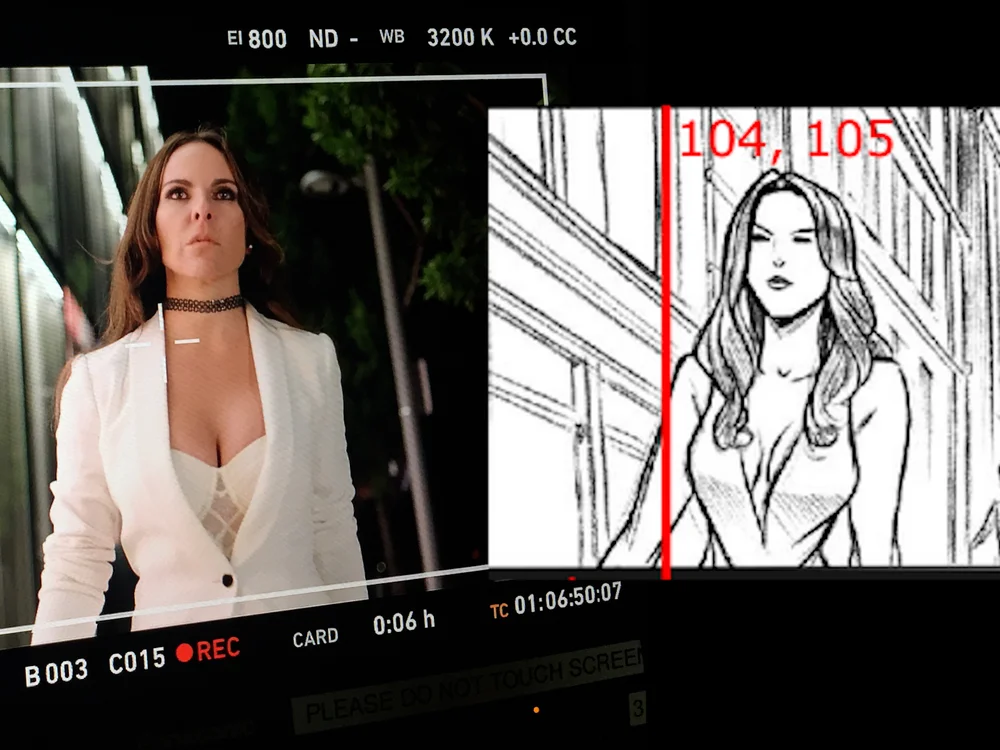
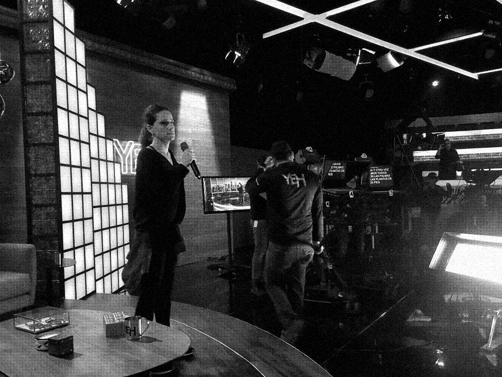
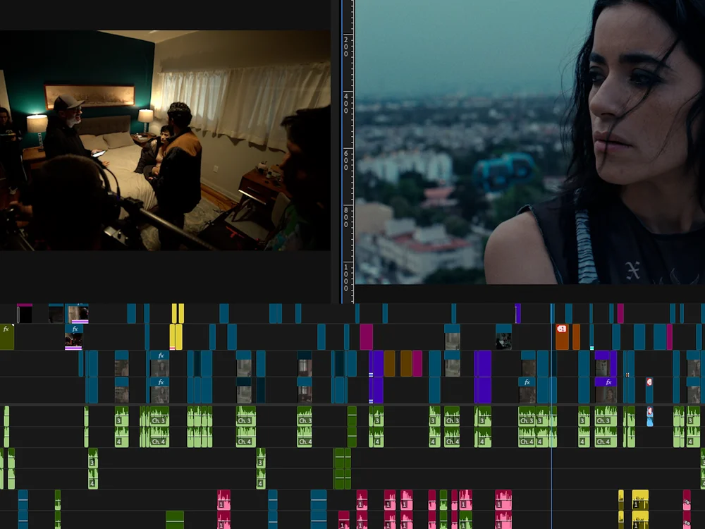

Estrategia creativa + desarrollo
Desarrollamos la visión creativa que da forma a tu campaña: desarrollo de conceptos, guiones, tono de voz y un marco estratégico construido en torno a tu audiencia.
Marketing de entretenimiento, estrategia creativa y posproducción para audiencias hispanas y latinas, venga de donde venga la historia.

Desarrollamos la visión creativa que da forma a tu campaña: desarrollo de conceptos, guiones, tono de voz y un marco estratégico construido en torno a tu audiencia.

Llevamos la campaña para que tú no tengas que hacerlo. Desde el arranque hasta la entrega, gestionamos plazos, coordinamos entre plataformas, alineamos a los equipos involucrados y mantenemos la parte creativa en curso. Piensa en nosotros como tu productor ejecutivo en el terreno. Hemos estado dentro de las cadenas.

El material en bruto es solo el comienzo. Nuestro equipo de posproducción lo convierte en contenido que completa la idea: edición, diseño sonoro, motion graphics y corrección de color.
Del primer tráiler al escenario de los upfronts, todos los formatos que una historia necesita para encontrar a su público. Toca cualquier formato para ver de qué se trata.
El primer vistazo que decide si lo ven. Hecho para enganchar, en cualquier idioma. Ver ejemplos
El elenco, el set, la historia detrás de la historia. Contenido que crea fans antes del estreno. Ver ejemplos
Piezas siempre al aire que mantienen un programa presente entre campañas.
El corte rápido y lleno de energía que vende un programa, un catálogo o una marca. Ver ejemplos
Historias de marca contadas como entretenimiento, para que el público las vea porque quiere. Ver ejemplos
Hecho para compradores: la propuesta y la prueba, editadas para cerrar el trato.
Cada versión corta, adaptación y formato, de la pausa comercial al feed vertical.
Promos semana a semana que traen al público de vuelta para el próximo episodio. Ver ejemplos
Piezas de cadena y plataforma que hacen que la marca se sienta como un lugar.
La pieza estelar de la temporada de upfronts, hecha para conquistar la sala.
Videos y presentaciones que convierten un catálogo en una historia que ningún comprador deja pasar.
Uno que entiende la cultura, conoce la industria y pierde el sueño por el trabajo igual que tú.